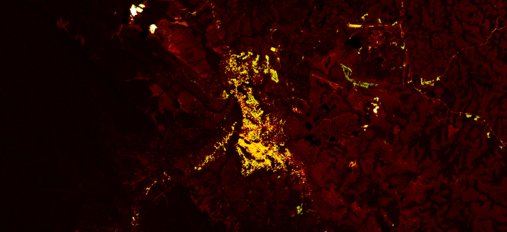
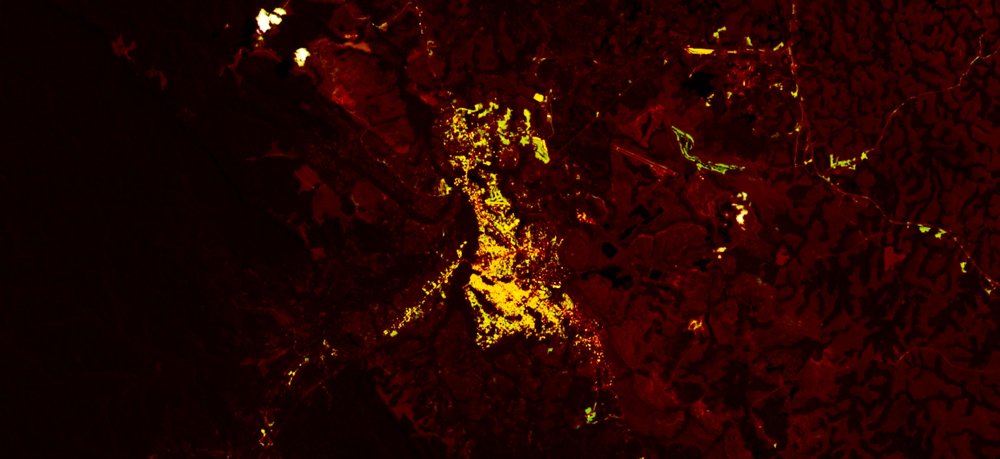

French Nuclear Power Stations

Commune: Belleville-sur-Loire

Commune: Saint Vulbas

Commune: Chooz

Commune: Chinon

Commune: Civaux

Commune: Cruas

Commune: Dampierre

Commune: Fessenheim

Commune: flamanville

Commune: Golfech

Commune: Gravelines

Commune: Nogent

Commune: Paluel

Commune: Penly

Commune: Saint Alban

Commune: Marcoule

Commune: Saint Laurent

Commune: Tricastin

Commune: Cattenom
African Mining Locations


Mine: Ambindandrakemba Mine
Location: Anosy Madagascar
Years Active: 1958 - 1963

Mine: Rossing Uranium Mine
Location: Arandis Namibia
Years Active: 1976 - Present
 

Mine: Mounana Uranium Mine
Location: Mounana Gabon
Years Active: 1959 - 1999


Commune: Franceville
Location: Gabon
Years Founded: 1980

Mine: Somair uranium mine
Location: Arlit Niger
Years Active: 1969 - Present


Mine: Azelik Uranium Deposit
Location: Azelik Niger
Years Active: Unknown - Present


Mine: Tchirozerine Uranium Mine
Location: Tchirozerine Niger
Years Active: 2007 - Present